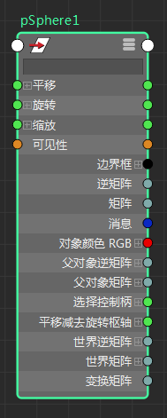

“节点编辑器”(Node Editor)中有四种类型的选择状态。节点可以：
- 在场景视图中处于选中状态，但在“节点编辑器”(Node Editor)中未处于选中状态

- 在“节点编辑器”(Node Editor)中亮显，但在场景视图中未处于选中状态

- 在场景视图中处于选中状态，并在“节点编辑器”(Node Editor)中亮显（同步）
- 在场景视图中未处于选中状态，并在“节点编辑器”(Node Editor)中不亮显（同步）
注： 选定状态的轮廓始终显示为绿色。白色轮廓表示节点在“节点编辑器”(Node Editor)中处于活动状态，但在场景中未处于选中状态。
当在“节点编辑器”(Node Editor)中亮显节点时，可以自定义该节点是否同时在场景视图中处于选中状态，反之亦然。在工作区域上单击鼠标右键以显示其标记菜单，然后选择“同步节点编辑器/视口选择”(Sync Node Editor/Viewport Selection)，以便在单击“节点编辑器”(Node Editor)中的某个节点时，场景视图中的同一节点也会处于选中状态，反之亦然。也可以在“节点编辑器”(Node Editor)中使用热键 C，或通过单击工具栏中的  和
和  图标来启用和禁用该选项。 指示选择内容已同步，而 指示选择内容未同步。有关标记菜单的详细信息，请参见节点编辑器标记菜单。
图标来启用和禁用该选项。 指示选择内容已同步，而 指示选择内容未同步。有关标记菜单的详细信息，请参见节点编辑器标记菜单。
也可以通过“窗口 > 设置/首选项 > 首选项 > 设置 > 节点编辑器”(Windows > Settings/Preferences > Preferences > Settings > Node Editor)，将此选项设置为首选项。如果在“首选项”(Preferences)窗口中选择此选项，则将在下次打开“节点编辑器”(Node Editor)时应用更改。